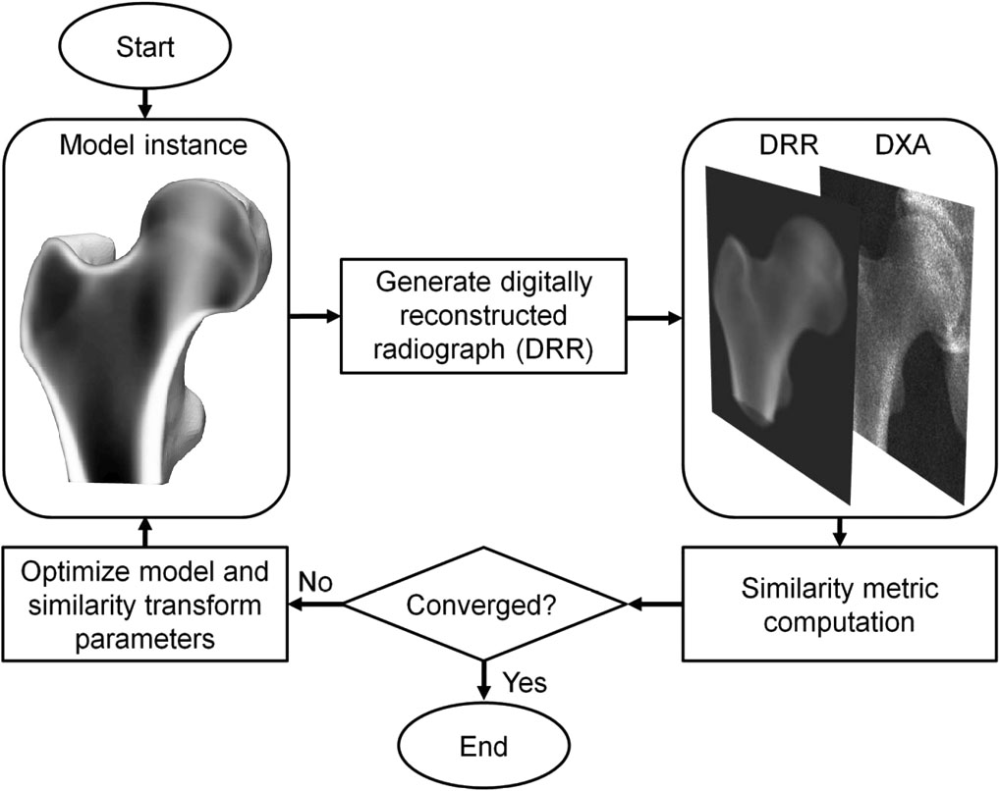
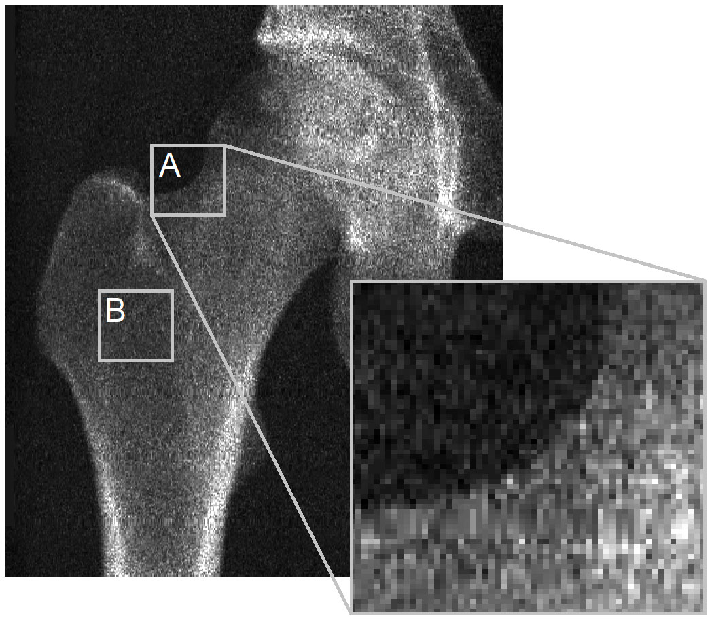
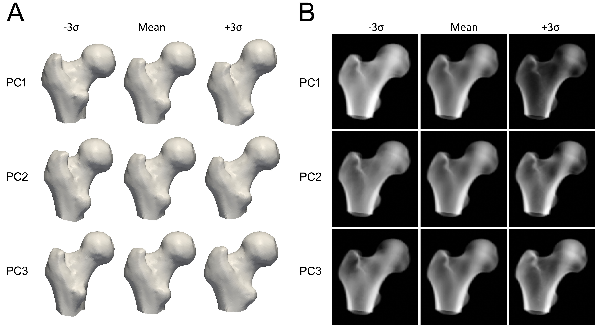
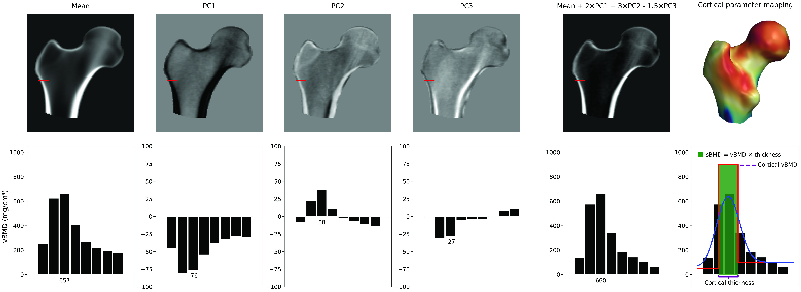
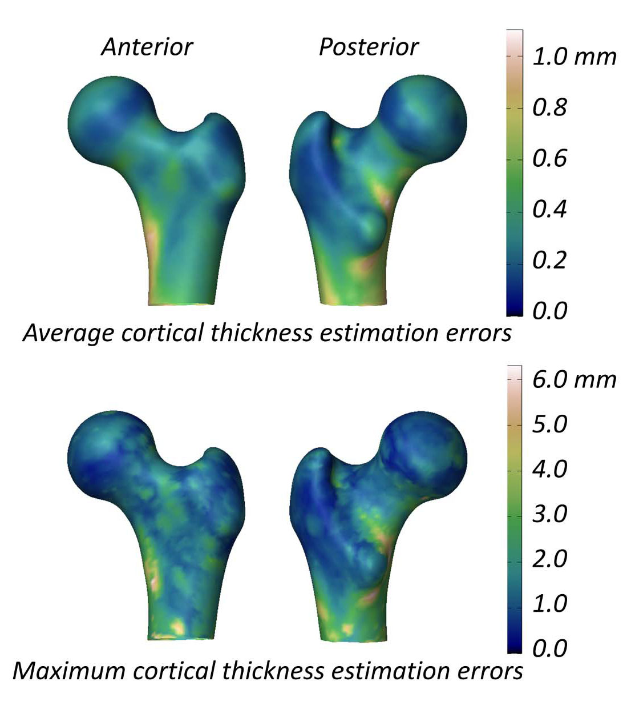
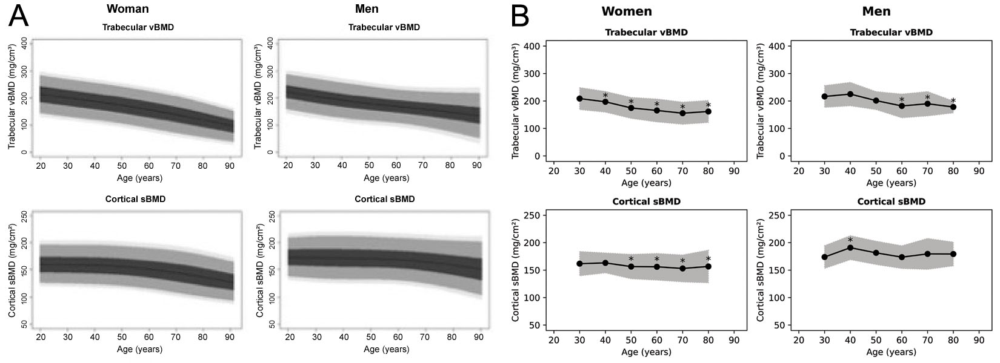

摘要
3D-DXA（在软件工具 3D-Shaper 中实现）是一种通过注册统计模型，从单张 2D DXA 图像生成股骨近端 3D 重建的软件方法。3D-DXA 的实现旨在提供类似于定量计算机断层扫描 (QCT) 的松质骨、皮质骨 and 结构参数估计。作为 3D-DXA 所基软件方法的发明者和开发者，我一直对它的采用和广泛使用深感忧虑。本文对 3D-DXA 固有的方法论局限进行了批判性评估，并探讨了其对研究和患者护理的影响。主要问题在于 DXA 图像中皮质的可视化有限，这阻碍了 3D-DXA 准确推导皮质参数。相反，该软件依赖于基于总体 BMD 的预测，而非直接的皮质测量。这可能导致结果无法反映真实的皮质测量值。
其他担忧包括由于统计模型源自特定人口而导致的群体偏见，以及使用单视图 DXA 图像导致的重建准确性有限。
这些局限性可能导致了不正确的测量和研究结果，但由于在涉及 3D-DXA 的研究中使用了不恰当的性能评估指标且缺乏多重比较校正，这些问题在很大程度上未被察觉。
尽管存在这些局限性，3D-DXA 已在多个国家获得监管批准，这可能会损害临床诊断和治疗决策的准确性。通过强调这些问题，本文旨在告知临床医生、研究人员和监管机构 3D-DXA 的显著局限性。它强调了重新评估其在研究和临床环境中的使用的紧迫性，以防止对结果的误读并确保患者安全。
关键词
3D-DXA, 3D-Shaper, 定量计算机断层扫描, 骨矿物质密度, 双能 X 射线骨密度仪, 皮质参数映射, 髋关节结构分析。通俗摘要
本综述批判性地考察了 3D-DXA 软件（也称为 3D-Shaper），旨在从单张 DXA 图像中估计股骨近端的松质、皮质和结构参数。3D-DXA 具有若干固有局限性，可能导致测量不准确，从而潜在地影响研究结果和患者治疗决策。了解这些问题对于研究人员和临床医生至关重要，以避免可能影响我们对骨生理学、药物治疗效果和患者安全知识的误读。引言
3D-DXA 是一种软件方法，它将 3D 统计可变形模型注册到单张 2D DXA 图像上，以生成股骨近端的 3D 模型 [1]。该模型基于一组西班牙高加索人群的定量计算断层扫描 (QCT) 扫描构建，该人群包括 81 名女性和 30 名男性，平均年龄为 56.2 ± 12.1 岁，年龄范围为 30 至 84 岁 [2]。统计模型的参数随后描述了该人群形状和密度分布的主要变化。在一个迭代过程中，搜索模型的参数以及位置、方向和大小，试图使模型的投影类似于 DXA 图像（图 1）。从生成的 3D 模型中，然后在骨表面测量皮质参数，并测量其中的松质体积 BMD 值。在将 3D-DXA 与 QCT 进行比较时，皮质厚度的平均绝对误差为 0.33 mm，皮质密度的平均绝对误差为 72 mg/cm³，相关系数大于或等于 0.86 [2]。
虽然已经提出了其他使用统计模型从 DXA 图像进行骨结构 3D 重建的方法 [4, 5]，但最初于 2010 年发表的软件方法 [6] 后来由 Galgo Medical SL（西班牙巴塞罗那）商业化为 3D-DXA，该公司是庞培法布拉大学（西班牙巴塞罗那）的衍生公司。该软件后来被扩展为从体积重建中测量皮质厚度和皮质骨矿物质密度 (BMD) [2]，现在由 3D-Shaper Medical SL（西班牙巴塞罗那）作为 3D-Shaper 进行商业化，该公司是 Galgo Medical SL 的进一步衍生公司，提供服务和软件。该软件被授权给 DMS Imaging（法国 Mauguio），与其 Stratos/Medix DXA 设备一起作为 3D-DXA 销售。富士胶圆 (Fujifilm, 日本东京) 以富士胶圆品牌 FDX Visionary DXA 销售相同的 DMS DXA 设备。此外，Imex Medical（巴西圣若泽）以 Elipse 系列销售这些设备，Radiología SA（西班牙马德里）以 Radioscore - DR 销售这些设备。这些都包括添加 3D-DXA 的选项。
作为原始软件方法 [1] 的开发者，我对其固有的局限性有着深刻的理解，这些局限性对于其他用户和研究人员来说可能并不明显。尽管我已在致《Bone》编辑的信中解释了该软件的主要局限性 [7]，但 3D-DXA 仍继续在世界各地销售和使用。3D-Shaper 已获得欧盟、日本、泰国、阿根廷监管机构的批准，并获得了 FDA 的 510(k) 许可，授权其用于患者诊断和治疗决策。鉴于这些背书，解决并澄清有关该软件的一些误解，从而增强对其局限性的理解，是至关重要且紧迫的。
方法论局限
在本节中，我将解释 3D-DXA 所基于方法论的一些局限性，以及可能导致进一步不准确的特定实现细节。皮质参数并未被测量
主要问题在于 DXA 图像中皮质的可见度不足，导致 3D-DXA 无法从中推导出皮质参数。为了说明这一点，我想回顾一下致《Bone》编辑的信中的一张图（图 2）。DXA 图像清楚地显示，在骨表面的大多数位置，没有可辨别的皮质来推导皮质参数。这适用于骨投影的轮廓 (A)，尤其是当两个相对的皮质垂直于 X 射线检测器时 (B)。这在像素尺寸为 0.3 x 0.25 mm 的 GE iDXA 扫描仪图像中很明显，但在使用较旧的 GE Prodigy DXA 设备（产生像素尺寸为 0.6 x 1.05 mm 的分辨率相当低的图像，但也由 3D-Shaper 软件支持）捕获的图像中变得更加突出。
3D-DXA 不是直接从 DXA 图像测量皮质参数，而是将形状和密度分布的统计模型注册到 DXA 图像上 [3]，并从该模型中提取皮质参数 [2]。该模型基于一组校准过的 QCT 扫描构建，在这些扫描中，标准 CT 扫描体素的亨斯菲尔德单位 (Hounsfield units) 使用校准体模转换为 BMD 值。
为了构建模型，首先对每个 QCT 扫描中的股骨近端进行分割，即构建股骨近端的表面网格。然后对对齐的股骨骨表面点应用主成分分析 (Principal Component Analysis) 等数学技术，生成平均形状和一组按重要性排序的描述形状变化的主成分 (PCs)。
为了构建密度分布的统计模型，将 QCT 体积变形为平均形状，并将相同的统计方法应用于体积中的 BMD 值，生成平均体积 and 一组描述整个体积骨矿物质密度变化的主成分。
每个主成分代表骨骼形状或密度变化的某种方式（图 3）。模型参数是确定将多少每个成分添加到平均模型中的数值因子。调整这些参数会修改形状或密度分布，产生新的模型实例。参数通常被约束在其变化的 2.5 到 3 个标准差内，以确保根据构建它的 QCT 扫描集，骨骼模型始终看起来是真实的。为了创建模型的新实例，密度体积被变形以匹配新形状，这是使用形状点子集计算的薄板样条 (TPS) 变换完成的。

3D-DXA 随后通过迭代改变模型参数并生成相应的模型实例，以及旋转和平移模型，生成 3D 重建，直到模型的投影与 DXA 图像根据预定的相似性指标阈值相匹配（图 1）。
皮质厚度和皮质密度随后使用等同于为 QCT 提出的解卷积方法 [8] 从模型实例中测量。因此，皮质参数不是从 DXA 图像中测量的，而是从注册到该图像上的参数模型中测量的。
因此，当 3D-DXA 展示皮质参数图，且在骨表面那些根本无法测得皮质的位置显示数值时 [9, 10, 11, 12, 13]，这些图仅仅是源自模型实例。尽管 3D-Shaper Medical 在致《Bone》编辑信的回应中澄清了这些参数是估计值而非测量值 [14]，但更准确的描述应该是：3D-DXA 使用一种复杂且可能出错的统计方法预测了这些值。鉴于皮质在 DXA 图像中的可见度有限，该软件主要依赖于整体骨密度，并受限于构建该模型所基于的西班牙人群的统计特征。本综述进一步探讨了这一局限性的广泛影响。

使用的模型参数数量
没有单一的参数可以增加皮质厚度。相反，皮质的表示取决于平均 3D 体积和密度模型主成分的线性组合。在图 4中，我们可以看到平均值和前三个 PC 如何生成新模型实例的示例。在这个例子中，作为 PC 缩放因子的模型参数值分别为 2、3 和 -1.5。虽然 PC1 增加了或减少了各处的密度，但其他 PC 以非描述性的方式改变密度分布。该图还说明了如何通过拟合平滑的阶跃模型从小体积中随后估计皮质参数。对皮质厚度、皮质密度或松质密度进行选择性且独立的调整（如果能够实现的话），将需要多个主成分的复杂组合，因此也需要许多模型参数。通常会保留描述主要变化模式的主成分子集。这将 BMD 分布和表面点的变化减少到一组减少的参数中。通常通过计算描述其人群内 95% 变化的形状和密度模型参数数量，或通过确定累积方差图中的“拐点”来确定需要多少个模型参数。然而，更准确的方法是使用 Horn 平行分析 [6]，它从数学上评估哪些 PC 应被视为噪声，从而可以丢弃。
虽然使用的参数数量是任何统计建模方法中的关键要素，但据我所知，3D-Shaper Medical 从未披露过这个数字或推导这个数字的方法。如果参数数量不够大（由 Horn 平行分析确定），它可能无法准确代表输入人群股骨形态的全部变化范围。此外，如果在研究和临床应用中该参数数量不一致，那么 3D-DXA 的报告准确性与临床准确性之间将会出现断层。
潜在的人口偏见
由 3D-DXA 生成的任何 3D 骨模型都源自对输入人群变化的统计。在 3D-Shaper 的情况下，该统计模型基于西班牙人群构建，包括 81 名女性和 30 名男性，平均年龄为 56.2 ± 12.1 岁 [30 岁 – 84 岁] [2]，且未接受影响骨代谢的治疗或患有相关疾病 [15]。显然，男性和女性的股骨形态存在差异，但人口统计特征也起着重要作用。例如，先前研究表明，高加索人群的股骨与亚洲人群显着不同 [16]。基于高加索人群构建的模型将无法生成拟合亚洲人群中每个受试者的重建。这是因为统计模型的参数被限制在西班牙平均股骨模型周围的 3 个标准差内。例如，一项研究报告称，白人女性的股骨颈皮质厚度为 1.84±0.03 mm，而韩国女性为 2.41±0.71 mm（通过 QCT 扫描测量） [17]。因此，如果受限于白人群体的三个标准差范围 (1.75–1.93 mm)，平均皮质厚度为 2.41 mm 的韩国女性将落在该范围之外。这个例子说明了让模型代表目标人群的重要性。
虽然在日本受试者中，3D-DXA 的测量值与 QCT 相关 [18]，但这仅仅是因为所有参数都与面积 BMD 相关。这并不意味着获得了受试者特定的重建。特别是，估计的皮质参数可能与真实值存在实质性偏差，尤其是在其空间分布方面。即使预测的股骨形状有误，只要统计模型的投影与 DXA 图像中的骨骼基本重叠，密度值（包括皮质厚度和皮质 BMD）仍将反映 aBMD。在任何人群中，与 aBMD 高的患者相比，aBMD 低的人松质 vBMD、皮质 BMD 都会更低，且皮质也更薄。此外，[18] 报告的仅是相关性，将在西班牙人群开发的模型应用于日本人群时可能存在显著偏差，这可能会产生临床后果。尽管存在这一根本局限，3D-DXA 目前仍在包括日本、泰国和印度在内的亚洲国家销售。
统计模型需要根据应用的人群进行训练。这可能意味着为每种性别、种族以及可能的治疗类型构建单独的模型，或者通过在一个模型中包含所有这些子组（前提是保留足够的参数以捕获全部变异范围）。这一原则在机器学习和人工智能工具中已得到确立 [19, 20, 21, 22]，但对于统计建模方法而言更为关键，因为模型受到输入人群的主动约束。尽管如此，3D-DXA 已被用于明显不同于模型人群的研究中，包括： 职业舞者 [9]、 足球运动员和游泳运动员 [23]、 肥胖年轻女性 [24]、 黑人女性 [25]、 高骨量患者 [11]、 患有成人生长激素缺乏症的患者 [26]、 患有银屑病疾病的患者 [27]、 患有 2 型糖尿病的患者 [28]、 患有原发性甲状旁腺功能亢进症的患者 [10, 29]、 患有肢端肥大症的患者 [30]、 患有唐氏综合症的患者 [13]、 袖状胃切除术后患者 [31]、 脊柱损伤男性 [32]、 患有低骨量的澳大利亚中老年男性 [33]、 以及最令人担忧的，儿科癌症幸存者 [34]。
重建准确性有限
3D-DXA 是一种高度复杂的方法，在多个阶段都容易产生误差。这些包括 QCT 校准产生的不准确、用于构建统计模型的可变形注册、密度模型向形状实例的变形、QCT 与 DXA 之间 BMD 和分辨率的差异，以及用等轴测投影代替扇束投影对模型投影进行的简化。这些因素中的每一个都可能以不可预测的方式引入偏见，从而潜在地倾斜结果。此外，特定的实现细节，如基于仅 111 名成年西班牙受试者（限制了形状、密度和皮质厚度的方差）构建统计模型，进一步限制了该软件工具的适用性。此外，目前尚不清楚 3D-Shaper 是否能准确读取 GE 和 Hologic 设备的专有数据文件，特别是在正确应用针对不同身体成分的校准和修正因子方面。当 3D-Shaper 应用于不同人群或人口特征随时间漂移时，这些潜在的不准确性可能会影响其结果。
理所当然的是，如果股骨近端的形状和方向与 DXA 图像无法完美匹配（达到亚毫米级精度），那么就不可能提取出达到亚毫米级精度的皮质厚度或皮质密度。不幸的是，正如 3D-DXA 的早期研究所显示的，仅从单张 2D DXA 图像生成完美的重建是不可能的 [35]。该研究表明，添加第二个视图可将形状误差从 1.3 mm 降低到 0.9 mm，BMD 误差从 4.4% 降低到 3.2%，这表明单视图重建显然不是最优的。相比之下，计算机断层扫描使用从股骨周围各个角度获取的数百个投影来重建体积。因此 QCT 确实允许独立测量皮质和松质参数。
3D-DXA 生成的股骨模型可能会根据模型参数搜索收敛的位置而具有完全不同的形态，特别是在无法找回正确的旋转角度时。这一点变化很大，一项使用 3D-DXA 进行的同日重复 DXA 扫描研究显示，预测强度的差异高达 62% [36]。该研究还报告称逐个元素的 BMD 差异达到 30 ± 50%，这很可能也会反映在皮质参数的低重复性准确度上（虽然未提供具体数据）。在另一项研究中，据报告 3D-Shaper 与 QCT 密度值之间的相关性较低 (r2 = 0.48) [37]，进一步表明了受试者特定的重建准确性有限。
在评估 3D-DXA 测量股骨结构参数能力的研究中，当将源自 3D-DXA 体积的测量值与来自 CT 的金标准测量值进行相关性分析时，股骨颈轴长度的相关系数报告为 r = 0.86 [38]。这比直接在 DXA 图像中测量的情况更差 (r = 0.90, [39])。此外，3D-DXA 生成的股骨颈轴角准确度也有限 (r = 0.71, [38])。这种准确度缺失的一个显而易见的原因是，股骨头在重建过程中被遮盖物排除在外，以防止半骨盆重叠干扰重建，尽管这可以通过像 [5] 那样添加第二个半骨盆模型来解决。
评估 3D-DXA 测量皮质参数能力的研究报告称，在股骨颈处，3D-DXA 与 QCT 之间的平均（± 标准差）皮质厚度差异为 0.04 ± 0.21 mm，在转子处为 -0.07 ± 0.15 mm [2]。该研究还提供了一张显示股骨模型表面平均和最大绝对皮质厚度估算误差的图（图 5），其中股骨大部分表面的平均误差大于 0.2 mm，最大误差大于 1 mm。相比之下，一项测量 18 个月阿仑膦酸钠治疗后皮质厚度变化的 QCT 研究报告了 1.4% 的增幅，相当于皮质厚度约增加了 0.018 mm [40]。汇总来自三项特立帕肽临床试验的数据显示，皮质厚度增加了 0.035 mm [41]。考虑到 3D-DXA 的误差超出了这些典型的治疗诱导变化， 3D-DXA 测量值不太可能可靠地区分真实的疗效驱动影响与方法论噪声。换句话说，如果一个人的皮质骨显示发生变化，目前尚不清楚这源于生理上的真实变化，还是源于 3D-DXA 固有的测量误差。

优于面积 BMD 的获益有限
在 3D-DXA 使用的统计密度模型中，第一个模型参数解释了绝大部分变化，增加其值会导致整体密度和所有皮质参数的同时增加 [7]。鉴于 DXA 图像中关于皮质的信息很少，3D-DXA 主要依赖于整体密度，因此也依赖于第一个模型参数。结果，皮质和松质参数本质上是相关的。虽然 DXA 图像中可见的股骨干内下侧和外侧皮质可能有一些贡献，但 3D-DXA 返回的参数主要反映了总面积 BMD (aBMD)。这意味着，如果 aBMD 增加，3D-DXA 分析将显示松质 vBMD、皮质 BMD 和皮质厚度的同步增加。事实上，在 2024 年欧洲钙化组织学会大会 [42] 和 2024 年美国骨矿物质研究学会年会 [43] 上发表的一项最新研究证实，3D-Shaper 参数与 aBMD 高度相关，因此不提供额外的骨折预测信息。此外，虽然 3D-DXA 重建确实捕获了 DXA 图像中可见的整体股骨轮廓，但其恢复颈轴长度和颈轴角的能力有限。因此，重建的形状主要反映了骨骼的总体大小，而这已经由 aBMD 提供，对骨折强度的预测并无太大帮助。能说明这一点的是：3D-DXA 与 QCT 的强度预测表现相关 (r2 = 0.88)，但在统计上并不优于仅通过 DXA 图像的股骨颈 aBMD 预测的表现 (r2 = 0.87) [37]。3D-Shaper Medical 的一项研究显示了类似的相关性 (r2=0.86)，但排除了与 aBMD 的比较 [44]。在针对日本人群的一项不同研究中，3D-Shaper 的测量值在预测髋部骨折方面在统计上并不优于总髋部 aBMD [45]。
关于在 2D DXA 图像上注册 3D 统计模型并预测股骨强度的类似方法，还有其他文章发表 [46, 47]，其中一项研究显示在骨折风险预测方面优于 aBMD [48, 49]。这种方法可能比 3D-DXA 具有一些优势，例如使用额外的骨盆模型来帮助恢复完整的股骨近端形状。尽管它仍然受到许多相同方法论局限性的约束。
如果 3D-DXA 无法超越单纯的 aBMD，那么它肯定无法超越 aBMD 与 HSA 参数的组合，而 HSA 参数是直接从 DXA 图像中测量的。这凸显了 3D-DXA 的根本局限性，并对其在临床或研究环境中的使用合理性提出了质疑。尽管如此，3D-Shaper Medical 现在仍提供基于 3D-DXA 的有限元分析服务。
验证方法
尽管 3D-DXA 存在固有的局限性，许多出版物仍报告了对其准确性的积极发现。这种差异可归因于使用了不恰当的验证方法 [21, 22]，这些方法倾向于掩盖该软件的真实局限性。在接下来的章节中，我将讨论这些验证中的问题，以及它们如何营造出 3D-DXA 可靠性和临床效用的感知。错误的性能评估指标
3D-Shaper Medical 将由 DXA 图像生成的 3D-DXA 表面网格与同一受试者 QCT 扫描手动生成的表面网格进行比较，得出点对表面平均距离为 0.93 mm [2]。他们还比较了皮质参数，发现皮质厚度的平均绝对误差为 0.33 mm，皮质密度的平均绝对误差为 72 mg/cm³。然而，这缺乏确定这些报告误差是否可接受的参照系，这意味着这些指标不一定能验证软件的有效性。评估 3D-DXA 的另一种方式是使用相关性。松质、皮质、整体 vBMD 以及皮质厚度的相关系数报告分别为 0.86、0.93、0.95 和 0.91。然而，这些强相关性主要是因为 3D-DXA 模型和 QCT 扫描中的所有皮质参数都与整体密度强烈相关。在 DXA 扫描中 aBMD 高于平均水平的患者，通常平均而言，也会表现出增加的松质、皮质、整体 vBMD 以及较厚的皮质。这些相关性结果无法提供该软件在生成受试者特定重建方面准确性的决定性证据，事实上，可能会营造出一种对其性能的误导性印象。
相关性也被用于评估基于人群的 3D-DXA 研究。当 3D-DXA 分析显示其参数与测试因素之间或跨不同人群存在显著相关性时，可以看到类似的效果。这再次是因为这些参数本质上与整体 BMD 相关，因此直接反映了 aBMD 的变化或差异。研究结果可能看起来很合理，且能紧密反映真实的变化。例如，运动会增加整体密度和皮质骨矿物质含量 [49]，当 aBMD 因运动而增加时，3D-DXA 分析看起来会产生合理的结果。然而，这些结果反映的并不是皮质参数本身，而仅仅是潜藏的 aBMD 变化或差异。因此，这些研究可能会让人对 3D-DXA 的有效性产生误解，营造出它能准确测量皮质参数的假象。
一种更为恰当的评估应包括将皮质参数与基础基准模型（如盲估计量）进行比较。这里的盲估计量是指一种不考虑个体差异，而是将整个人群的平均值应用于所有受试者的简单的、朴素的估计方法。例如，皮质厚度的盲估计量会使用一组人的平均皮质厚度图，并将其统一应用于每个案例。这种方法作为一种基准或最低标准，对照它，更先进的方法应接受评估。任何先进的方法至少应优于这种基础估计。据我所知，此类评估尚未发表。
大多数关于 3D-DXA 软件的出版物仅展示成功的重建案例，这可能营造出对其可靠性的虚假信心。为了定量评估 3D-DXA 的可靠性，可以进行失败率评估。在之前的一项研究中 [51]，虽然没有明确说明，但在通过比较模型投影与 DXA 图像识别出不准确的重建并予以剔除后，173 名受试者中仅保留了 80 名，失败率超过 50%。为了能够进行此类评估，3D-Shaper 需要提供模型投影与 DXA 图像的并排显示。然而，更稳健的评估是将生成的体积渲染图和截面图与金标准 QCT 扫描进行比较，并在独立评估中评估失败率。
在某些情况下，仅仅观察到显著的变化或差异就被视为 3D-DXA 有效的证据，而忽略了实际效果是否正确。在对我致编辑信的回应中，治疗组之间的显著差异被作为 3D-DXA 功效的证据呈现。然而，在此评估中，作者针对 TPTD 治疗后的皮质 BMD 变化提供了两个不同的结果，一个显示显著增加 [52]，另一个显示非显著降低 [15]。正如我在“药物疗效研究中的误导性结果”一节中所解释的，这两者都没有反映出在 TPTD 治疗中人们预期的真实变化。
缺乏多重比较校正
本节的担忧主要不在于 3D-DXA 软件本身，而在于 3D-Shaper Medical 提供的服务及随后的出版物。关键问题在于在报告 3D-DXA 参数的变化或差异（特别是皮质参数图）时，缺乏多重比较校正。在分析具有多个不同测量值的数据时，应用多重比较校正至关重要。对于 3D-Shaper，该软件生成 71 个骨参数，每个参数代表一次独立的统计检验。如果不进行多重比较调整（例如使用 Bonferroni 校正），由于偶然获得显着结果的可能性增加，会导致错误结论。尽管如此，使用 3D-Shaper 的研究经常在不应用任何形式的多重比较校正的情况下报告显着变化或差异 [10, 24, 27, 28]，从而营造出对结果不当的信心。当某些参数被测量但未报告时，这可能具有误导性，这是一种 P 值操控偏见（p-hacking bias）的形式 [53]，即突出显示显着结果，而忽略由于进行了大量测试而导致假阳性风险增加的事实。
当使用 3D-Shaper 的研究展示彩色编码图，显示骨表面皮质参数的变化或差异或体积中的 BMD 值时，会出现类似的问题。在这些案例中，每个顶点或体素都代表一次独立的统计检验，显着性通常由每个点上的简单 t 检验决定 [9, 10, 11, 12, 13, 28, 52, 54, 55]。这种方法突出了彩色编码图中看似显着的区域，营造出了在实际上并无局部变化或差异的地方存在局部差异的幻觉。在通过彩色编码截面图呈现体积变化或差异时，体素级别的统计显着性通常根本不提供 [9, 11, 30, 52, 54, 55, 56]。以同样的方式，这提示了真实的改变，而实际上它们可能仅仅是随机变异的结果。因此，这些彩色编码图可能会给人以对治疗或干预效果过于乐观的印象，错误地暗示了可能并不存在的功效。
由于多重比较校正不足而导致的假阳性问题一直是神经影像学领域的持久挑战 [57]。为了解决这个问题，神经影像学界开发了一些解决方案，这些方案也可以应用于检查骨表面皮质参数变化和 QCT 扫描体素密度变化的研究中。Poole 等人 [58] 描述了如何使用 SurfStat 来测试骨表面每个点的皮质参数差异是否具有统计显着性，并应用随机场理论进行多重比较校正。类似的软件包也存在于基于体素的分析中，例如统计参数映射 (SPM) 库和 FMRIB 软件库 (FSL)。使用这些工具将提高使用 3D-DXA 研究的统计严谨性，尽管观察到的变化或差异仍将主要反映所有参数与 aBMD 的相关性。
影响
3D-DXA 的使用在研究和临床实践中都有着广泛的影响。接下来的章节将深入探讨这些挑战。药物疗效研究中的误导性结果
在大多数研究中，3D-DXA 的结果与皮质中预期的结果一致，因为健康个体的皮质参数通常与 aBMD 相关。这往往会产生看起来合理的结果。然而，当变化不遵循常规模式时，这种方法就会出现缺陷。该方法在骨模拟和重建发生改变的药物试验中特别成问题，在这种情况下，所有参数可能不会发生通常的成比例增加或减少。一个能说明问题的例子是关于特立帕肽的一项研究，该研究中 3D-DXA 显示所有皮质参数都有增加，包括与安慰剂相比皮质 vBMD 显着增加 [52]。相比之下，使用应用到 QCT 的等效皮质测量技术显示，在经过相同的 18 个月特立帕肽治疗后，皮质 BMD 显着下降，这在来自三个不同临床试验的数据中都是一致的 [41]。这种下降归因于重建速率的增加，导致皮质孔隙率增大，这在微型 CT (micro-CT) 观察中也得到了证实 [59]。
在较早的一项研究中，3D-Shaper Medical 确实报告过由于特立帕肽导致的皮质 BMD 下降 [15]。虽然作者指出这是一种下降，但该变化不具有统计显着性。最近的一项独立研究也发现，使用 3D-DXA 分析，对特立帕肽治疗反应的皮质 BMD 没有显着变化 [60]。股骨干皮质（在 DXA 图像中部分可见）可能产生了一些影响。由于 3D-DXA 的性质，该区域 aBMD 的下降可能透射到了整个股骨模型中，包括不可见皮质的区域，因为模型参数全局影响密度分布。然而，这并未导致 QCT 研究中观察到的显着皮质 BMD 下降。
报告 TPTD 治疗导致所有皮质参数增加的研究还并行评估了阿巴洛肽 (abaloparatide)，显示后者的所有参数增幅更大 [52]。使用 3D-DXA 分析的后续研究也报告了阿巴洛肽治疗后皮质 BMD 显着增加 [55, 56]。鉴于阿巴洛肽与 TPTD 具有相似的作用机制，即增加骨重建速率，理所当然地可以预期它也会导致皮质 BMD 下降。事实上，一项使用 QCT 的研究在 35 名患者经过类似周期的阿巴洛肽治疗后观察到了皮质 BMD 下降 [61]，尽管这种减少不具有统计显着性。这表明 3D-DXA 研究不仅产生了不准确的变化，而且还可能导致对阿巴洛肽疗效的评估过于乐观。
Lewiecki 等人的一项研究 [54] 进一步说明了 3D-DXA 在测量不一致的皮质改变方面的局限性。他们的 3D-DXA 分析报告称罗莫索珠单抗 (romosozumab) 导致所有皮质参数增加。相比之下，之前的 QCT 分析发现相同治疗后皮质 BMD 并没有增加 [62]。作者指出：“目前还不清楚为什么罗莫索珠单抗治疗在髋部整体和松质 vBMD 方面由 QCT 和基于 DXA 的 3D-SHAPER 获得的数据在各研究中是相似的，但在皮质 vBMD 方面却存在差异。” 鉴于其中一些作者已经看到了那封致《Bone》编辑信，且信中已经解释并预测了这种差异 [7]，看来关于 3D-DXA 能力和局限性的误解仍然存在。结果，这一误解可能再次导致了对该药物功效的过于乐观的评估。
这些研究通过展示皮质和松质骨变化的彩色地图进一步传播了潜在错误的结果。3D-DXA 无法测量局部或局灶性变化，部分原因是每个模型参数都会从全局影响密度分布，还因为这些变化在 DXA 图像上并不可见。这些研究中未能应用多重比较校正进一步削弱了结果的可靠性，因为图中看似显着的区域实际上显着性要低得多，从而导致了对各种药物的评估过于乐观。
患者管理
虽然 3D-Shaper 软件可以产生 71 个测量指标，但临床批准的版本仅产生整体松质 vBMD 和皮质 sBMD，以及相关的 T 值和 Z 值。目前尚不清楚 T 值和 Z 值来自什么人群，但在 3D-Shaper Medical 的一次网络研讨会中提到了高加索参考数据 [63]。之前已经为西班牙 [64] 和阿根廷 [65] 人群生成了参考图，两者都转载在图 6中。然而，这些图彼此不同，也与 3D-Shaper 软件生成的图不同。3D-Shaper Medical、DMS Imaging 及其分销商并未透露这一人群，也未说明这些数据是如何得出的。然而，3D-Shaper 在日本的分销商东洋医学株式会社 (Tokyo, Japan) 证实，日本市场批准的 3D-Shaper 软件并未使用来自日本群体的参考数据。考虑到高加索和亚洲人群之间皮质和松质参数的巨大差异 [17]，在未经进一步验证的情况下在日本应用这些 T 值和 Z 值似乎并不审慎。在应用这些数值的每个人群中，其有效性也都应得到确认。
在一场网络研讨会中 [66]，3D-Shaper Medical 建议了一种潜在的临床用途，即 3D-Shaper 结果显示皮质 sBMD 低且松质 vBMD 极低。由于根据该表，特立帕肽对松质骨的改善优于皮质骨，因此有人说特立帕肽是最佳治疗方案。然而，基于此表，如果忽略椎体 aBMD，临床医生自然会选择地舒单抗或阿巴洛肽而非特立帕肽。
3D-DXA 可能只会与常规 DXA T 值和 Z 值评估一起使用。因此，错过高风险个体的危险将极小。然而，由于与 3D-DXA 相关的误差，皮质 sBMD 和松质 vBMD 总是会略高或略低。在处于治疗边界的患者中，这可能会动摇临床医生，使其在 aBMD 单独无法提示的情况下给予抗骨质疏松药物。
关于骨小梁分数 (TBS) 的一项研究表明，这种额外的评估会显着影响继发性骨质疏松症的治疗决策 [67]。在该研究中，21%–25.5% 的 BMD 测量值正常的患者其 TBS 显示骨质量较差，这改变了治疗决策。类似的效果也可能发生在 3D-DXA 上，可能导致意外后果，如过度开处方。如果使用了该表，这也可能动摇临床医生选择一种药物而非另一种药物。
3D-Shaper Medical 还表示，可以监测患者，以确定所选治疗是否确实对皮质和松质部位产生了预期效果。然而，考虑到 3D-DXA 的误差大于预期变化，且重复性较低 [36]，目前尚无法确定在随访 3D-DXA 评估中看到的变化是由于真实效果还是仅仅由于 3D-DXA 的固有误差。如果临床医生信任这些结果，他们可能会被动摇，从而不必要地更改治疗方案。
(A)
| 2D DXA（总髋部）aBMD | 3D-DXA (3D-Shaper) 松质 vBMD | 3D-DXA (3D-Shaper) 皮质 sBMD | |
|---|---|---|---|
| 阿仑膦酸钠 (Alendronate) | + | + | + |
| 地舒单抗 (Denosumab) | ++ | ++ | ++ |
| 唑来膦酸 (Zoledronic acid) | + | + | ++ |
| 特立帕肽 (Teriparatide) [15, 52, 55*, 56] | + | ++ | = |
| 阿巴洛肽 (Abaloparatide) | ++ | ++ | ++ |
| 罗莫索珠单抗 (Romosozumab) | +++ | +++ | +++ |
(B)
| aBMD | vBMD | sBMD | |
|---|---|---|---|
| 特立帕肽 [52, 56] (18 个月) | ++ (3.3%) | ++/+++ (9%) | + (1.8%) |
| 特立帕肽 [15] (24 个月) | = (p > 0.05) | ++/+++ (5.9%) | = (p > 0.05) |
| 特立帕肽 [60] (24 个月) | = (p > 0.05) | ++/+++ (>14%) | = (p > 0.05) |
(C)
| 符号 | （总髋部）aBMD | 松质 vBMD | 皮质 sBMD |
|---|---|---|---|
| +++ | Δ > n/a % | Δ > n/a % | Δ > n/a % |
| ++ | 2 < Δ ≤ n/a % | 4 < Δ ≤ n/a % | 2 < Δ ≤ n/a % |
| + | 0.5 < Δ ≤ 2 % | 0.5 < Δ ≤ 4 % | 0.5 < Δ ≤ 2 % |
| = | -0.5 ≤ Δ ≤ 0.5 % | -0.5 ≤ Δ ≤ 0.5 % | -0.5 ≤ Δ ≤ 0.5 % |
| - | -2 ≤ Δ < -0.5 % | -4 ≤ Δ < -0.5 % | -2 ≤ Δ < -0.5 % |
| -- | Δ < -2 % | Δ < -4 % | Δ < -2 % |
虽然临床版本的 3D-DXA 不提供各个解剖区域皮质 sBMD 的信息，但它确实显示骨表面 sBMD 的彩色编码 3D 模型。3D-Shaper Medical 随后建议这可用于检测局部脆弱性 [66]。不幸的是，3D-DXA 无法重建受试者特定的皮质图。我将再次参考图 2 获得直观的解释。因此，如果 3D-DXA 皮质图显示局部缺陷，这些可能是统计模型在统计上似乎合理的输出，但不对应患者的真实解剖结构。这再次可能导致不必要或不恰当的治疗决定。
3D-Shaper 软件现已通过 510(k) 上市前通知程序获得了 FDA 许可 [68]。3D-Shaper Medical 通过一项相关性研究获得了该许可，该研究将截面积 (CSA)、截面惯性矩 (CSMI)、截面模量 (Z)、屈曲比 (BR)、皮质表面骨矿物质密度 (sBMD)、松质体积骨矿物质密度 (vBMD) 和整体 vBMD 与来自 Hologic Inc. 先前已获得 FDA 许可的髋部结构分析 (HSA) 软件的类似测量值进行了比较。
值得注意的是，颈轴长度和颈轴角在此次评估中仍然缺失，因此这些参数的使用并未获得 FDA 许可。应当指出的是，国际临床骨密度学会 (ISCD) 指南建议不应使用 HSA 参数来评估髋部骨折风险，但髋轴长度除外 [69]。此外，该监管批准不包括将测量值与参考数据进行比较的 T 值或 Z 值。这引发了对 3D-Shaper 在美国临床适用性的担忧。
最后，3D-Shaper 参数被认为在功能上等同于 Hologic QDR X 射线骨密度仪的 HSA 选项。FDA 无法确认 3D-Shaper 是否可与其他 DXA 扫描仪一起使用，从而使在美国与其他设备的兼容性问题悬而未决。
讨论
总之，3D-DXA 产生了各种骨参数，虽然看起来非常详细，但主要反映了整体面积 BMD，而非测量独特的皮质或松质特性。虽然该软件产生的结果在皮质和松质变化与 aBMD 成比例的人群中可能与真实值相关，但它无法捕获受试者特定的测量值或局部变化。在合成代谢治疗等情况下，这一局限性尤为突出，因为此时皮质和松质骨参数可能呈反向变化，而 3D-DXA 无法反映在 QCT 中观察到的这些真实变化。这对其在常规临床护理中作为可靠的研究工具的使用提出了重大质疑。3D-DXA 最初开发的目的是通过提供整体 vBMD 的估算值来更好地诊断骨质疏松症 [70, 71]。通过不尝试分别评估皮质和松质区，3D-DXA 产生的整体 vBMD 可能仍代表了有效的估计。该方法后来被扩展，试图通过直接分析模型参数来改进骨折风险估算，因为这些参数完全描述了统计模型的形态 [51, 72, 73, 74]。然而，本综述中详细阐述的 3D-DXA 的关键局限性仍然存在，并损害了其准确性和可靠性。
本研究受到 3D-DXA 商业化公司（包括 3D-Shaper Medical、DMS Imaging 和 Fujifilm）缺乏透明度的限制。因此，它依赖于公开信息和我开发该方法的个人经验。我鼓励读者向这些公司或其代表就 3D-DXA 和 3D-Shaper 尚未披露的方面寻求澄清。
专业学会的评估可以通过提供对 3D-DXA 有效性的独立评估并就其使用建立官方建议来提供有价值的指导。虽然国际 DXA 最佳实践工作组关于双能 X 射线骨密度仪实践指南的更新中指出，关于 3D-DXA，“需要更多证据来为这些新型成像技术在临床实践中的应用提出建议” [75]，但我相信现在已经有足够的证据来作为建议的基础，我希望这篇综述能在这方面有所帮助。
总之，鉴于 3D-DXA 的根本局限性，我的专业评估是 3D-DXA 提供的皮质和松质参数不应用于研究目的，也不适用于诊断、监测或治疗决策支持等临床应用。
作者贡献
TW 负责手稿的构思、数据整理、形式分析、调查、方法论、资源、可视化和撰写。资助
本研究未获得任何资助。数据可用性
本文中展示的所有数据均可根据作者要求提供。利益冲突
作者是 3D-DXA 软件基础方法相关专利的共同发明人。作者曾参与有关商业 3D-DXA 软件代码、统计模型和宣传材料的知识产权及起源的讨论。作者与 3D-Shaper Medical 或其他参与 3D-DXA 商业开发的公司并无关联，且未获得股权、特许权使用费或其他经济补偿。作者曾受邀在教育论坛为 UCB 讲课，并获得了安进 (Amgen Inc.) 和礼来 (Lilly) 的研究补助支持。本文表达的观点仅代表作者个人，并基于对方法论和现有科学证据的批判性评估。参考文献
- Whitmarsh T (2012). 3D Reconstruction of the Proximal Femur and Lumbar Vertebrae from Dual-Energy X-Ray Absorptiometry for Osteoporotic Risk Assessment
- Humbert L, Martelli Y, Fonolla R, et al. (2017). 3D-DXA: Assessing the Femoral Shape, the Trabecular Macrostructure and the Cortex in 3D from DXA images. IEEE Transactions on Medical Imaging, 36(1), 27–39.
- Whitmarsh T, Humbert L, De Craene M, et al. (2011). Reconstructing the 3D Shape and Bone Mineral Density Distribution of the Proximal Femur From Dual-Energy X-Ray Absorptiometry. IEEE Transactions on Medical Imaging, 30(12), 2101–2114.
- Ahmad O, Ramamurthi K, Wilson KE, et al. (2010). Volumetric DXA (VXA): A new method to extract 3D information from multiple in vivo DXA images. Journal of Bone and Mineral Research, 25(12), 2744–2751.
- Väänänen SP, Grassi L, Flivik G, et al. (2015). Generation of 3D shape, density, cortical thickness and finite element mesh of proximal femur from a DXA image. Medical Image Analysis, 24(1), 125–134.
- Whitmarsh T, Humbert L, De Craene M, et al. 3D bone mineral density distribution and shape reconstruction of the proximal femur from a single simulated DXA image: an in vitro study. In: Dawant BM, Haynor DR, eds. Medical Imaging 2010: Image Processing. Vol. 7623. SPIE; 2010:76234U.
- Whitmarsh T. Concerns regarding the use of 3D-DXA. Bone. 2021;149:115939.
- Treece G, Gee A (2015). Independent measurement of femoral cortical thickness and cortical bone density using clinical CT. Medical Image Analysis, 20(1), 249–264.
- Freitas L, Amorim T, Humbert L, et al. (2018). Cortical and trabecular bone analysis of professional dancers using 3D-DXA: a case–control study. Journal of Sports Sciences, 37(1), 82–89.
- Gracia-Marco L, García-Fontana B, Ubago-Guisado E, et al. (2019). Analysis of Bone Impairment by 3D DXA Hip Measures in Patients With Primary Hyperparathyroidism: A Pilot Study. The Journal of Clinical Endocrinology \& Metabolism, 105(1), 175–184.
- Orduna G, Humbert L, Fonolla R, et al. (2018). Cortical and Trabecular Bone Analysis of Patients With High Bone Mass From the Barcelona Osteoporosis Cohort Using 3-Dimensional Dual-Energy X-ray Absorptiometry: A Case-Control Study. Journal of Clinical Densitometry, 21(4), 480–484.
- Gifre L, Humbert L, Muxi A, et al. (2017). Analysis of the evolution of cortical and trabecular bone compartments in the proximal femur after spinal cord injury by 3D-DXA. Osteoporosis International, 29(1), 201–209.
- García Hoyos M, Humbert L, Salmón Z, et al. (2019). Analysis of volumetric BMD in people with Down syndrome using DXA-based 3D modeling. Archives of Osteoporosis, 14(1).
- Beck B, Harding A, Weeks B, et al. (2021). Response to “Concerns regarding the use of 3D-DXA”. Bone, 149, 115936.
- Winzenrieth R, Humbert L, Di Gregorio S, Bonel E, García M, Del Rio L. Effects of osteoporosis drug treatments on cortical and trabecular bone in the femur using DXA-based 3D modeling. Osteoporos Int.2018;29(10):2323–2333.
- Cummings SR, Cauley JA, Palermo L, et al. Racial differences in hip axis lengths might explain racial differences in rates of hip fracture. Osteoporos Int.1994;4(4):226–229.
- Kim KM, Brown JK, Kim KJ, et al. Differences in femoral neck geometry associated with age and ethnicity. Osteoporos Int. 2010;22(7):2165–2174.
- Sone T, Humbert L, Lopez M, et al. (2022). Assessment of femoral shape, trabecular and cortical bone in Japanese subjects using DXA-based 3D modelling. JOURNAL OF BONE AND MINERAL RESEARCH, 37, 214--214.
- Varoquaux G, Cheplygina V (2022). Machine learning for medical imaging: methodological failures and recommendations for the future. npj Digital Medicine, 5(1).
- Hadjiiski L, Cha K, Chan H, et al. (2023). AAPM task group report 273: Recommendations on best practices for AI and machine learning for computer‐aided diagnosis in medical imaging. Medical Physics, 50(2).
- Huisman M (2024). When AUC-ROC and accuracy are not accurate: what everyone needs to know about evaluating artificial intelligence in radiology. European Radiology, 34(12), 7892–7894.
- Gallifant J, Bitterman DS, Celi LA, et al. (2024). Ethical debates amidst flawed healthcare artificial intelligence metrics. npj Digital Medicine, 7(1).
- Amani A, Bellver M, del Rio L, et al. (2022). Femur 3D-DXA Assessment in Female Football Players, Swimmers, and Sedentary Controls. International Journal of Sports Medicine, 44(06), 420–426.
- Maïmoun L, Renard E, Humbert L, et al. (2021). Modification of bone mineral density, bone geometry and volumetric BMD in young women with obesity. Bone, 150, 116005.
- Jain RK, López Picazo M, Humbert L, et al. (2025). Bone Structural Parameters as Measured by 3-Dimensional Dual-Energy X-Ray Absorptiometry Are Superior in Black Women and Demonstrate Unique Associations With Prior Fracture Versus White Women. Endocrine Practice, 31(2), 152–158.
- Gracia-Marco L, Gonzalez-Salvatierra S, Garcia-Martin A, et al. (2021). 3D DXA Hip Differences in Patients with Acromegaly or Adult Growth Hormone Deficiency. Journal of Clinical Medicine, 10(4), 657.
- Toussirot E, Winzenrieth R, Aubin F, et al. (2024). Areal bone mineral density, trabecular bone score and 3D-DXA analysis of proximal femur in psoriatic disease. Frontiers in Medicine, 11.
- Ubago-Guisado E, Moratalla-Aranda E, González-Salvatierra S, et al. (2023). Do patients with type 2 diabetes have impaired hip bone microstructure? A study using 3D modeling of hip dual-energy X-ray absorptiometry. Frontiers in Endocrinology, 13.
- Guerra FS, Palladino N, Winzenrieth R, et al. (2024). Advanced 3D-DXA insights into bone density changes in hyperparathyroidism. Journal of Diabetes \& Metabolic Disorders, 23(2), 2191–2199.
- Kužma M, Vaňuga P, Ságová I, et al. Non-invasive DXA derived bone structure assessment of acromegaly patients: a cross sectional study. Eur J Endocrinol. 2019;180(3):201–211.
- Maïmoun L, Aouinti S, Puech M, et al. Modification of bone architecture following sleeve gastrectomy: a five-year follow-up. J Bone Miner Res. 2024;40(2):251–261.
- Maïmoun L, Gelis A, Serrand C, et al. (2023). Alteration of Volumetric Bone Mineral Density Parameters in Men with Spinal Cord Injury. Calcified Tissue International, 113(3), 304–316.
- Harding AT, Weeks BK, Lambert C, et al. (2020). Effects of supervised high-intensity resistance and impact training or machine-based isometric training on regional bone geometry and strength in middle-aged and older men with low bone mass: The LIFTMOR-M semi-randomised controlled trial. Bone, 136, 115362.
- Gil-Cosano JJ, Ubago-Guisado E, Sánchez MJ, et al. (2020). The effect of an online exercise programme on bone health in paediatric cancer survivors (iBoneFIT): study protocol of a multi-centre randomized controlled trial. BMC Public Health, 20(1).
- Humbert L, Whitmarsh T, De Craene M, et al. (2010). 3D reconstruction of both shape and Bone Mineral Density distribution of the femur from DXA images. 2010 IEEE International Symposium on Biomedical Imaging: From Nano to Macro, 456–459.
- O’Rourke D, Beck BR, Harding AT, et al. (2021). Assessment of femoral neck strength and bone mineral density changes following exercise using 3D-DXA images. Journal of Biomechanics, 119, 110315.
- Dudle A, Gugler Y, Pretterklieber M, et al. (2023). 2D-3D reconstruction of the proximal femur from DXA scans: Evaluation of the 3D-Shaper software. Frontiers in Bioengineering and Biotechnology, 11.
- Clotet J, Martelli Y, Di Gregorio S, et al. (2018). Structural Parameters of the Proximal Femur by 3-Dimensional Dual-Energy X-ray Absorptiometry Software: Comparison With Quantitative Computed Tomography. Journal of Clinical Densitometry, 21(4), 550–562.
- Ramamurthi K, Ahmad O, Engelke K, et al. (2011). An in vivo comparison of hip structure analysis (HSA) with measurements obtained by QCT. Osteoporosis International, 23(2), 543–551.
- Whitmarsh T, Treece GM, Gee AH, et al. (2015). Mapping Bone Changes at the Proximal Femoral Cortex of Postmenopausal Women in Response to Alendronate and Teriparatide Alone, Combined or Sequentially. Journal of Bone and Mineral Research, 30(7), 1309–1318.
- Whitmarsh T, Treece GM, Gee AH, et al. (2016). The Effects on the Femoral Cortex of a 24 Month Treatment Compared to an 18 Month Treatment with Teriparatide: A Multi-Trial Retrospective Analysis. PLOS ONE, 11(2), e0147722.
- Huininga K, Koromani F, Zillikens M, et al. (2024). Use of 3D Shaper Analysis for the Assessment of Fracture Risk in a Population-Based Setting. JBMR Plus, 8(Supplement\_1), i1--i340.
- Huininga K, Koromani F, Zillikens MC, et al. (2024). Use of 3D Shaper Analysis for the Assessment of Fracture Risk in a Population-based Setting. ASBMR 2024 Annual Meeting Abstracts and Abstract Book.
- Qasim M, López Picazo M, Ruiz Wills C, et al. (2024). 3D-DXA Based Finite Element Modelling for Femur Strength Prediction: Evaluation Against QCT. Journal of Clinical Densitometry, 27(2), 101471.
- Iki M, Winzenrieth R, Tamaki J, et al. (2021). Predictive ability of novel volumetric and geometric indices derived from dual-energy X-ray absorptiometric images of the proximal femur for hip fracture compared with conventional areal bone mineral density: the Japanese Population-based Osteoporosis (JPOS) Cohort Study. Osteoporosis International, 32(11), 2289–2299.
- Grassi L, Väänänen SP, Ristinmaa M, et al. Prediction of femoral strength using 3D finite element models reconstructed from DXA images: validation against experiments. Biomechanics and Modeling in Mechanobiology, 16(3).
- Grassi L, Fleps I, Sahlstedt H, et al. (). Validation of 3D finite element models from simulated DXA images for biofidelic simulations of sideways fall impact to the hip. Bone, 142.
- Grassi L, Väänänen SP, Jehpsson L, et al. (). 3D Finite Element Models Reconstructed From 2D Dual‐Energy X‐Ray Absorptiometry (DXA) Images Improve Hip Fracture Prediction Compared to Areal BMD in Osteoporotic Fractures in Men (MrOS) Sweden Cohort. Journal of Bone and Mineral Research, 38(9).
- Grassi L, Väänänen SP, Voss A, et al. DXA-based 3D finite element models predict hip fractures better than areal BMD in elderly women. Bone. 2025;195:117457.
- Allison SJ, Poole KES, Treece GM, et al. (2015). The Influence of High-Impact Exercise on Cortical and Trabecular Bone Mineral Content and 3D Distribution Across the Proximal Femur in Older Men: A Randomized Controlled Unilateral Intervention. Journal of Bone and Mineral Research, 30(9), 1709–1716.
- Whitmarsh T, Fritscher KD, Humbert L, et al. (2011). Hip fracture discrimination using 3D reconstructions from Dual-energy X-ray Absorptiometry. 2011 IEEE International Symposium on Biomedical Imaging: From Nano to Macro, 1189–1192.
- Winzenrieth R, Ominsky M, Wang Y, et al. (2021). Differential effects of abaloparatide and teriparatide on hip cortical volumetric BMD by DXA-based 3D modeling. Osteoporosis International, 32(3), 575–583.
- England JR, Cheng PM (2019). Artificial Intelligence for Medical Image Analysis: A Guide for Authors and Reviewers. American Journal of Roentgenology, 212(3), 513–519.
- Lewiecki EM, Betah D, Humbert L, et al. (2024). 3D-modeling from hip DXA shows improved bone structure with romosozumab followed by denosumab or alendronate. Journal of Bone and Mineral Research, 39(4), 473–483.
- Winzenrieth R, Kostenuik P, Boxberger J, et al. (2022). Proximal Femur Responses to Sequential Therapy With Abaloparatide Followed by Alendronate in Postmenopausal Women With Osteoporosis by 3D Modeling of Hip Dual‐Energy X‐Ray Absorptiometry (DXA). JBMR Plus, 6(4).
- Winzenrieth R, Humbert L, Boxberger JI, et al. (2022). Abaloparatide Effects on Cortical Volumetric BMD and Estimated Strength Indices of Hip Subregions by 3D-DXA in Women With Postmenopausal Osteoporosis. Journal of Clinical Densitometry, 25(3), 392–400.
- Bennett C, Miller M, Wolford G (2009). Neural correlates of interspecies perspective taking in the post-mortem Atlantic Salmon: an argument for multiple comparisons correction. NeuroImage, 47, S125.
- Poole KE, Treece GM, Gee AH, et al. (2014). Denosumab Rapidly Increases Cortical Bone in Key Locations of the Femur: A 3D Bone Mapping Study in Women With Osteoporosis. Journal of Bone and Mineral Research, 30(1), 46–54.
- Sato M, Westmore M, Ma YL, et al. (2004). Teriparatide [PTH(1–34)] Strengthens the Proximal Femur of Ovariectomized Nonhuman Primates Despite Increasing Porosity. Journal of Bone and Mineral Research, 19(4), 623–629.
- Hadji P, Kamali L, Thomasius F, et al. (2024). Real-world efficacy of a teriparatide biosimilar (RGB-10) compared with reference teriparatide on bone mineral density, trabecular bone score, and bone parameters assessed using quantitative ultrasound, 3D-SHAPER® and high-resolution peripheral computer tomography in postmenopausal women with osteoporosis and very high fracture risk. Osteoporosis International, 35(12), 2107–2116.
- Sone T, Ohnaru K, Sugai T, et al. (2023). The effects of abaloparatide on hip geometry and biomechanical properties in Japanese osteoporotic patients assessed using DXA-based hip structural analysis: results of the Japanese phase 3 ACTIVE-J trial. Archives of Osteoporosis, 18(1).
- Genant HK, Engelke K, Bolognese MA, et al. (2016). Effects of Romosozumab Compared With Teriparatide on Bone Density and Mass at the Spine and Hip in Postmenopausal Women With Low Bone Mass. Journal of Bone and Mineral Research, 32(1), 181–187.
- MEDICAL 3S (2021). Webinar - Use of 3D-Shaper in clinical research: state of the art and potential applications
- Casado Burgos E, Di Gregorio S, González Macías J, et al. (2019). Datos de referencia de mediciones óseas en modelos 3D de fémur proximal en población española cn DXA: Proyecto SEIOMM 3D-SHAPPER. Congreso SEIOMM (24º : 2019 : Gerona).
- Brance ML, Saravi FD, Henr{\'i}quez MM, et al. (2020). Reference Values of Three-Dimensional Proximal Femur Parameters from Bone Densitometry Images in Healthy Subjects from Argentina. World Congress on Osteoporosis, Osteoarthritis and Musculoskeletal Diseases, 372--372.
- Jennings I (2023). 3D Shaper Technology: Revolutionizing Bone Health Analysis
- Al-Hashimi L, Klotsche J, Ohrndorf S, et al. (2023). Trabecular Bone Score Significantly Influences Treatment Decisions in Secondary Osteoporosis. Journal of Clinical Medicine, 12(12), 4147.
- Food {, Administration} D (2022). 510(k) Summary: K220822
- Broy SB, Cauley JA, Lewiecki ME, et al. (2015). Fracture Risk Prediction by Non-BMD DXA Measures: the 2015 ISCD Official Positions Part 1: Hip Geometry. Journal of Clinical Densitometry, 18(3), 287–308.
- Whitmarsh T, Humbert L, Craene MD, et al. (2009). Reconstrucción de la forma del fémur y densidad mineral ósea en 3D para el diagnóstico de osteoporosis a partir de DXA
- Whitmarsh T, Humbert L, Del Río Barquero LM, et al. (2011). Volumetric Bone Mineral Density Estimation using a 3D Reconstruction Method from Dual-energy X-ray Absorptiometry. ASBMR 2011 Annual Meeting Abstracts and Abstract Book.
- Whitmarsh T, Fritscher KD, Humbert L, et al. (2011). A Statistical Model of Shape and Bone Mineral Density Distribution of the Proximal Femur for Fracture Risk Assessment. Medical Image Computing and Computer-Assisted Intervention – MICCAI 2011, 393–400.
- Whitmarsh T, Fritscher KD, Humbert L, et al. (2012). Hip fracture discrimination from dual-energy X-ray absorptiometry by statistical model registration. Bone, 51(5), 896–901.
- Martelli Y, Whitmarsh T, Humbert L, et al. (2012). A software framework for 3D reconstruction and fracture risk assessment of the proximal femur from dual-energy x-ray absorptiometry. Proceedings of VPH 2012: Virtual Physiological Human - Integrative approaches to computational biomedicine.
- Slart RHJA, Punda M, Ali DS, et al. (2024). Updated practice guideline for dual-energy X-ray absorptiometry (DXA). European Journal of Nuclear Medicine and Molecular Imaging, 52(2), 539–563.